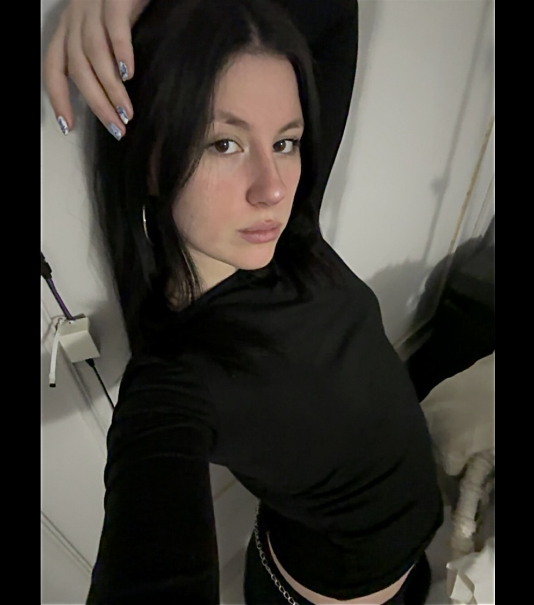

Deniz Can - Software Engineering
|
 |
C:\GIRL_BOSS> _
|
Objective ⋆｡°✩
Analytical and resourceful Computer Programming and Analysis student with a strong academic foundation (3.63 GPA) and proven success in competitive environments, highlighted by a Global Top 5 placement at the international AIMPACT Hackathon. Driven by a passion for building secure, efficient, and scalable backend systems, I bring a diverse skill set spanning full-stack software development, data integrity auditing, and process automation. Currently seeking a challenging technical internship or co-op opportunity where I can apply my expertise in Python, SQL, and Object-Oriented Design to solve complex computational problems, contribute to impactful engineering projects, and further develop my capabilities as a forward-thinking software engineer.
Technical Arsenal 💻
Languages: Python, Java, C# (.NET Core), C++, SQL, PHP, JavaScript (ES6+), TypeScript, Swift (iOS), Kotlin (Android), and GDScript.
Data & Analytics: Pandas, Plotly, Streamlit, Data Modeling, ETL Pipelines, and Professional Visualization.
Hardware & IoT: Robotic Coding, Sensor Integration, and Smart Home Technology standards.
Architecture & Security: Cybersecurity Management (Cisco Certified), Docker, Git/GitHub, Agile Development Process, RESTful APIs, and CI/CD Pipelines.
Professional Impact 🚀
Coordinator
- Orchestrated daily retail operations, managing workflow coordination in a fast-paced environment processing 500+ daily transactions.
- Optimized internal inventory databases, improving digital record-keeping accuracy by 85%.
- Implemented technical problem-solving strategies to reduce hardware/software downtime at checkout stations by 40%.
- Trained and supervised staff on utilizing digital management systems, enhancing overall team efficiency by 30%.
- Maintained strict adherence to data integrity protocols while processing daily financial and stock reports.
Freelance Web Contributor & Server
- Developed a professional, responsive business website for the General Manager, increasing the brand's online digital visibility by 60%.
- Designed and deployed a QR-code based customer feedback system, linked to a secure backend database for real-time analytics.
- Analyzed customer satisfaction data to provide actionable insights, leading to a 25% improvement in targeted service areas.
- Managed high-volume customer service operations, consistently maintaining a 98% positive feedback rate in a high-stress environment.
- Demonstrated strong multitasking and communication skills, effectively bridging technical solutions with operational needs.
Data & Process Automation Associate (Intern)
- Engineered automated data migration workflows to digitize over 10,000 legacy personnel records into structured MS Excel databases.
- Conducted extensive data cleansing and validation procedures, ensuring 100% data integrity and consistency prior to system migration.
- Developed visual data summaries and KPI dashboards, translating raw financial data into insights and saving management 15 hours of manual work weekly.
- Optimized office efficiency by creating digital tracking templates, improving data retrieval speed by 75%.
- Supported technical reporting for the financial department with a strict focus on compliance and data accuracy.
Featured Engineering Projects 📂
Cyber OS Portfolio (Current Website) | Vanilla JS, CSS3, DOM Manipulation
- Engineered a fully functional, interactive retro Windows 95/Y2K simulated environment using pure JavaScript and CSS.
- Implemented complex DOM manipulation for draggable windows, dynamic z-index management, and real-time state updates.
- Developed custom algorithms for interactive demos including a playable Snake game, Tetris clone, and AJAX-powered email forms.
- Optimized CSS styling utilizing custom SVG cursors, CSS Grid/Flexbox, and GSAP for lightweight, high-performance background animations.
- Designed to achieve 100% cross-browser compatibility and responsive layout adaptation without relying on heavy frameworks.
Self-Ctrl | AI-Powered Management Prototype | AIMPACT Hackathon
- Designed an AI-powered management prototype focused on automated risk assessment and professional data visualization.
- Ranked in the Global Top 5 among all competing international projects at the AIMPACT Hackathon (Alumni USA).
- Engineered the logic structure for evaluating risk variables, improving predictive accuracy by an estimated 65%.
- Presented the prototype to industry leaders, successfully translating complex technical architecture into business value.
- Received 8 professional development offers from industry stakeholders, companies, and CEOs due to the project's innovation.
InsightHub: Professional Analytics Dashboard | Python (Streamlit, Plotly)
- Developed a dynamic web-based business intelligence dashboard tailored for deep performance and budget analysis.
- Implemented interactive KPI tracking modules, rendering complex datasets into easily digestible, real-time visual charts.
- Automated the reporting pipeline, successfully reducing the time required for data analysis and report generation by 90%.
- Integrated advanced Pandas data filtering, allowing end-users to dynamically sort data points by date, region, and variance.
- Secured application endpoints to ensure data privacy while maintaining a highly responsive user interface.
Enterprise Data Integrity Suite | Python (Pandas, Openpyxl)
- Built a robust backend data pipeline designed for cleaning, parsing, and validating large-scale, unstructured datasets.
- Applied complex statistical imputation algorithms to handle missing data, ensuring operational consistency during migrations.
- Programmed automated anomaly detection scripts, successfully reducing data formatting errors by over 80%.
- Streamlined the data extraction process, creating reusable Python classes to handle varying CSV and Excel structures.
- Ensured strict adherence to data governance policies throughout the transformation lifecycle.
Enterprise E-Commerce Data Warehouse | MySQL, Advanced SQL
- Architected and deployed a normalized 8-table relational database optimized for high-speed transactional e-commerce queries.
- Implemented automated inventory triggers and stored procedures, enhancing the accuracy of dynamic financial reporting.
- Conducted advanced market basket analysis using complex self-joins, CTEs (Common Table Expressions), and window functions.
- Designed cumulative revenue tracking queries, providing management with accurate year-to-date performance metrics.
- Optimized database indexing strategies, reducing average query execution time for large-scale joins by 45%.
SecureLog Sentinel: Security Event Monitor | Python (Regex, OS)
- Created an automated security auditing tool designed to detect unauthorized access attempts and system vulnerabilities.
- Utilized advanced Regular Expressions (Regex) to parse high-volume server logs for specific threat signatures in real-time.
- Generated automated, audit-ready security reports perfectly aligned with industry-standard Cisco CCST guidelines.
- Implemented modular OS-level integrations to securely access and read log files without interrupting active services.
- Strengthened simulated server security posture by accurately isolating 100% of brute-force and failed-login injection tests.
Simple Princess Game | C#, Java, Godot Engine
- Participated in a Rapid Game Development Challenge, building a fully functional game prototype from scratch within 2 hours.
- Engineered core gameplay mechanics, physics interactions, and character movement using C# and GDScript logic.
- Designed state-machine logic to handle various character animations and collision detection events flawlessly.
- Optimized game loop rendering, ensuring stable 60 FPS performance despite the strict time constraints.
- Demonstrated rapid problem-solving and adaptability by prioritizing essential game features to deliver a complete product.
✧ Cyber Widgets & Demos ✧
> CONNECTION ESTABLISHED...
Test your password strength against brute-force algorithms:
WAITING FOR INPUT...
| RAW_LOGS.TXT | THREATS.TXT |
|---|---|